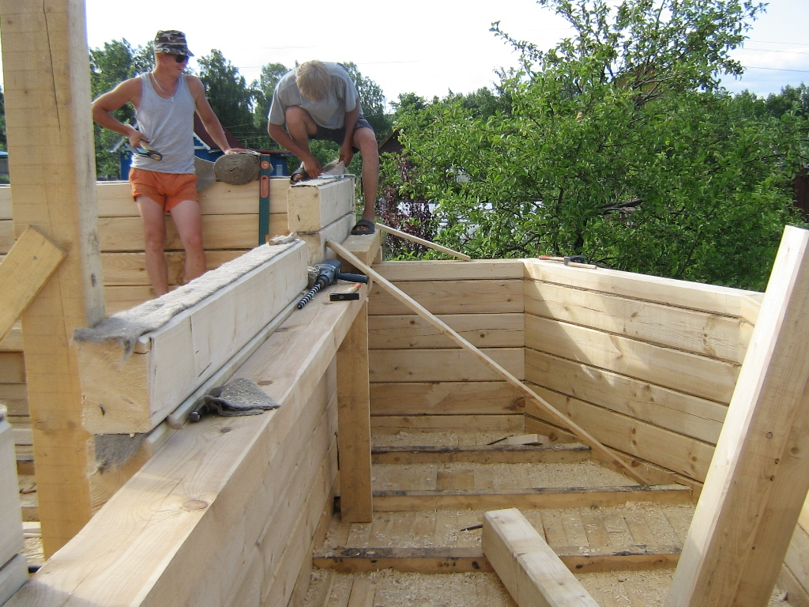
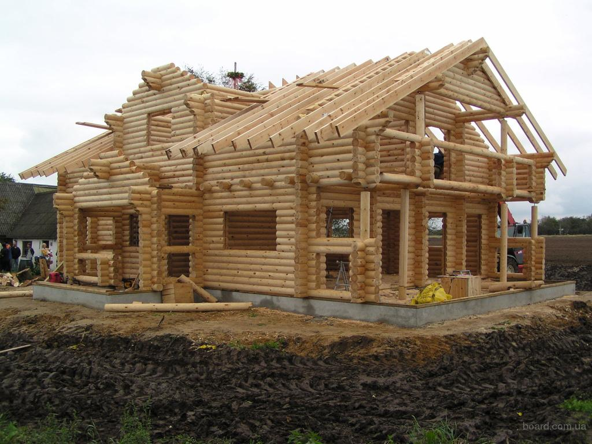
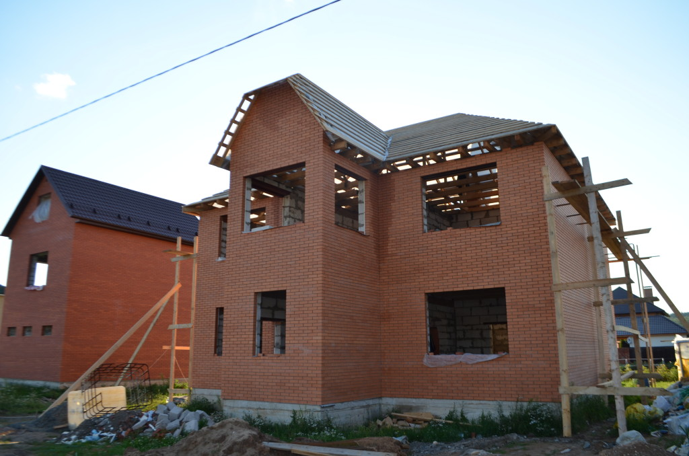
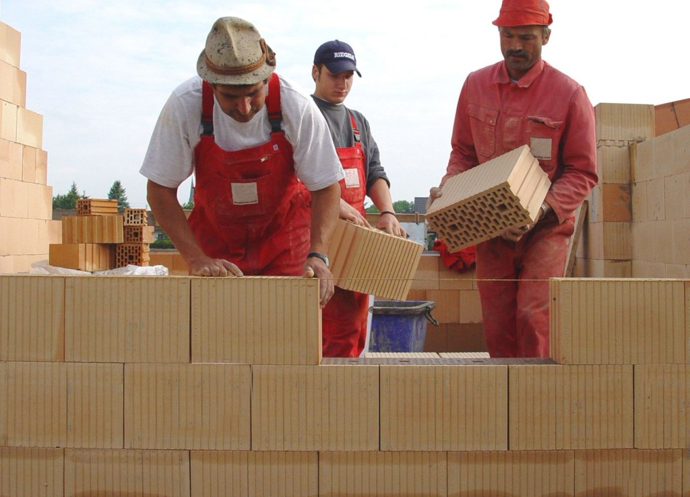
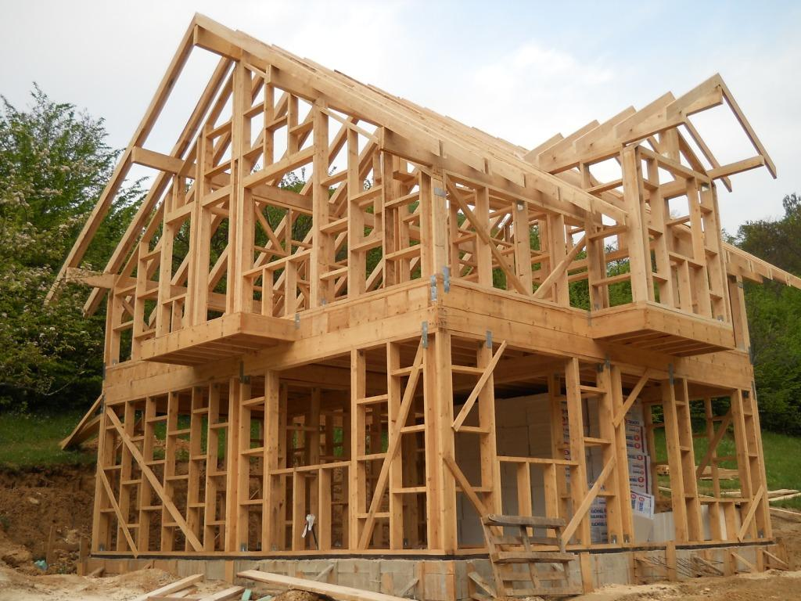
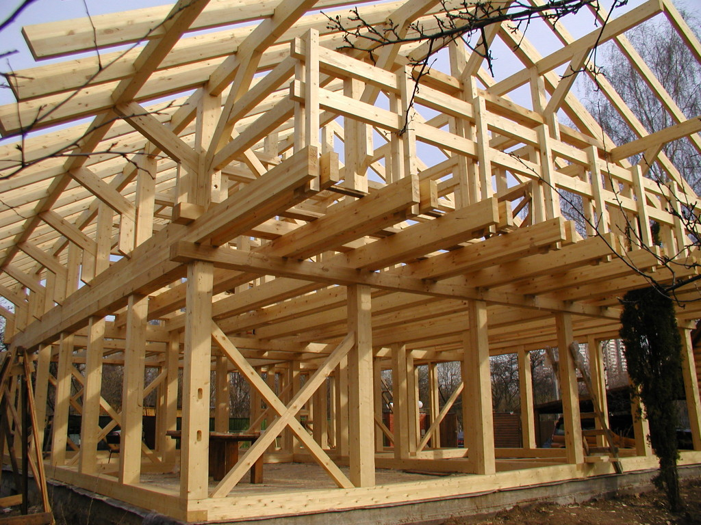

Какую технологию выбрать для строительства дома?
Вместе с традиционными технологиями строительства наши застройщики начинают перенимать зарубежный опыт и применять новые технологии. Так, в белорусских городах и селах стали появляться каркасные и модульные дома. Расширяется и ассортимент материалов, применяемых для строительства домов по привычным технологиям. Разберемся в этом многообразии вместе с руководителями архитектурной студии «Зробим» Андрусем Bezdar, управляющим строительной компании «Энкира» Александром Водчицем.
По конструктивной системе индивидуальные дома делятся на:
- стеновые – деревянные, блочные, панельные, монолитные;
- каркасные – на основе дерева и ЛСТК;
- модульные.
Внутри каждой из этих групп также присутствует классификация в зависимости от материалов, применяемых в строительстве. Начнем с рассмотрения материалов и технологий, применяемых при стеновом возведении индивидуальных домов.
Деревянные срубы
Дерево – материал, который традиционно использовался для строительства домов на территории Беларуси. Строительство из массива, несмотря на дороговизну материала, по-прежнему является популярной технологией. Для возведения деревянных домов сегодня используют несколько материалов:
- круглый лес (ручная рубка);
- оцилиндрованное бревно;
- профилированный брус (естественной влажности, нормируемой влажности, сухой);
- клееный брус.
Раньше круглый лес был самым дешевым материалом, в связи с чем использовался при строительстве чаще всего. Сегодня трудно найти специалиста, который выполнит рубку качественно, выросла и стоимость, которая сегодня отличается от стоимость оцилиндрованного бруса лишь незначительно. К тому же, при строительстве дома из кругляка, требуется присутствие специалиста, который будет контролировать процесс.
Профилированный брус естественной влажности появился на рынке строительных материалов как попытка удешевить отделку дома из бруса. На верхней и нижней грани такого бруса профилируется шип и паз, куда укладывают межвенцовый уплотнитель. У некоторых производителей также профилируется гребенка. Наличие шипа, паза или гребенки предотвращает скручивание бруса, из-за чего не происходит смещение материала в стене.
Оцилиндрованное бревно похоже на профилированный брус естественной влажности, при этом угловые соединения делаются в заводских условиях на специальном оборудовании и запиливаются «в чашку». Таким образом, дом из оцилиндрованного бревна можно считать бюджетной альтернативой рубленого бревенчатого дома. Этот материал используют для строительства летних дачных домиков, беседок. Если дом предназначен для постоянного проживания, его стены нужно утеплять.
Профилированный брус нормируемой влажности получают в промышленных условиях. Сушка сырья положительно сказывается на качестве последующей обработки, предотвращает грибковое поражение дерева, уменьшает кручение бруса. Дома из такого профилированного бруса дают минимальную усадку.
«Сухой» профилированный брус, который применяется в сочетании с внешним утеплением стен (вентилируемый фасад). Такой вариант конструкции стен используется при строительстве домов для постоянного проживания. При этом натуральное дерево на наружных стенах скрывается за слоем отделки. Технология строительства такого дома достаточно сложная, т.к. нужно совместить материал каркаса, который дает усадку (дерево) с безусадочным утеплителем.
Клееный брус – дорогой материал, поэтому постройка дома из клееного бруса обойдется примерно в 2 раза дороже, чем из оцилиндрованного. При этом он обладает одним важным преимуществом – практически не дает усадки. Форма профиля у клееного бруса схожа с профилированным массивом. В отличие от дома из массива, дом из клееного бруса не «дышит».
В Европе, а в последнее время и в России используется новая технология строительства деревянных срубов – из вертикального бруса. Родина этой технологии –Альпы. Дом с вертикальным расположением бруса собирается как конструктор. В брусе имеются просверленные отверстия, в которых присутствует воздух. За счет этого воздуха стена обладает хорошими теплоизоляционными свойствами, а дом не дает усадки. У такой технологии деревянного домостроения есть и недостатки:
- не позволяет сделать полноценную мансарду. Крыша с небольшим скатом (5–7°);
- между вертикальными бревнами в результате усушки дерева будут постоянно появляться щели, которые придется законопачивать. При традиционном способе укладки бревен эта проблема решается сама собой, благодаря способствующей уплотнению силе тяжести;
- невозможно осуществить замену нижнего венца в результате его прогнивания.
Андрусь Bezdar: Для строительства деревянного дома в условиях нашего климата рекомендуется использовать брус толщиной 24 мм. Однако даже при этом, у таких стен коэффициент теплопроводности ниже нормативного. Такие дома строили в Беларуси столетия назад. Но не нужно забывать, что тогда в центре дома размещалась печь, все помещения в доме располагались максимально энергоэффективно. А современные дома из бруса достаточно холодные.
Блочные дома
70% домов в Беларуси строят из блоков, т.к. эти материалы дешевле и обладают нормативным коэффициентом сопротивления теплопередаче.
Для строительства блочных домов используют:
- кирпич;
- газобетон;
- пенобетон;
- арболит;
- газосиликат;
- керамзитобетонные блоки;
- керамический кирпич/блок;
Частные застройщики для возведения стен своего дома по-прежнему применяют кирпич, прежде всего, из соображений долговечности этого материала (до 200 лет) и дешевизны. Недостатков у кирпича также немало, среди них:
- Кирпич способен накапливать влагу – чтобы материал не разрушился дом нужно постоянно отапливать в холодное время года.
- Дешевизна материала – вопрос сомнительный, т.к. для нормативной теплопроводности, требуется толщина стен в 2 кирпича, или использование теплоизоляционного материала.
- Сложность проведения коммуникаций.
- Долгий срок строительства – около года.
Современные блочные материалы, выступающие в качестве альтернативы традиционному кирпичу – газобетон, пенобетон, газосиликат и арболит. Их относят к ячеистым, что означает присутствие пор внутри блоков. Несмотря на схожую технологию производства, каждый из этих материалов обладает специфическими свойствами. Чтобы заметить отличие газосиликата от пенобетона, можно провести небольшой эксперимент – оба блока поместить в заполненную водой ванну. Газосиликат впитает в себя влагу и утонет, в то время как пенобетон намокнет только на 5 мм и будет плавать. Еще одно преимущество пенобетона перед газосиликатом – увеличение прочности с течением времени.
Интересный современный строительный материал – арболит, который до 90% состоит из древесной щепы, остальные 10% – высокосортный цемент и отвердитель. По своим физическим свойства материал имеет сходство с деревом: обладает низкой теплопроводностью, хорошей звукоизоляцией, обеспечивает воздухообмен. При использовании арболита не требуется дополнительное утепление стен, оптимальная толщина стены – 38 см.
Андрусь Bezdar: Керамический блок хорош тем, что в его состав добавляется древесная стружка. Она постепенно выгорает, в результате в блоках образуются пустоты. А если есть пустоты, значит, есть воздух, который является очень хорошим теплоизолятором. Керамические блоки принципиально отличаются от ячеистых бетонов способностью запасать тепло.
Все тепло делится на лучистое и конвекционное. Конвекционное – от отопления, лучистое – от солнца. Керамический кирпич может запасать лучистое тепло. Что это дает владельцу дома? Например, мы хорошо протопили дом и после этого открыли окно. Если материал стен не обладает инерционностью, тепло из помещения уйдет очень быстро. Керамический кирпич и дерево – это 2 материала, которые способны накапливать тепло. В таком случае даже если конвекционное тепло ушло, эти материалы постепенно отдают лучистое.
Таким образом, дом, построенный из керамического кирпича и дерева при равной толщине стен, будет обладать одинаковой теплопроводностью. Керамические блоки еще лучший вариант, т.к. в этом материале есть поры, и требуется меньшая толщина стен. Однако надо понимать, что это дорогие дома. Стоимость керамических блоков – 2 млн. за куб, газосиликата – 700 тыс.
Панельные дома
Основным несущим элементом конструкции таких домов выступают Sip-панели, которые соединяются друг с другом без предварительного возведения каркаса, роль которого выполняет верхний и нижний обвязочный брус.
Конструкция сип-панели многослойна: 2 плиты ОСП разделяются слоем пенополистирола. Стены такого дома не требуют дополнительного утепления, возводятся в короткие сроки. Сокращению сроков строительства панельного дома также способствует идеально ровная поверхность стен, благодаря чему расходуется меньше времени на их отделку.
Для соединения панелей друг с другом используются саморезы с запениванием мест соединения. Для устройства внутренних перегородок панельного дома можно использовать те же сип-панели или сделать деревянно-каркасные конструкции, заполнив их звукоизоляционным материалом.
Такую технологию чаще используют для строительства домов с временным проживанием (дача, летний домик).
Монолитное домостроение
Эта технология основана на применении несъемной или съемной опалубки. На место стен устанавливаются блоки опалубки с полостями, которые заполняются бетоном и армируются. Такие стены не требуют дополнительного утепления.
В качестве несъемной опалубки используют:
- щепо-цементные плиты;
- фиброцементные плиты;
- панели из листов пенополистирола.
Цементный фибролит представляет собой смесь древесной шерсти (или минерализованной стружки) и цемента. Этот строительный материал можно использовать для возведения стен даже при низких температурах. По своим свойствам фибролит похож на дерево, при этом отличается высокой степенью негорючести. В отличие от фибролита опалубка из пенополистирола менее экологична.
Для возведения монолитных стен с использованием съемной опалубки также используют пенобетон. В качестве опалубки применяют ламинированную фанеру. Для застывания пенобетона достаточно 1 суток, после чего опалубку снимают и продолжают возведение стен. Эта технология достаточно экономична (из-за низкой стоимости пенобетона), но вместе с тем трудоемка. У большинства владельцев таких домов на стенах появляются трещины.
Каркасное домостроение
Технология постройки каркасного дома подразумевается использование деревянного или металлического каркаса. В качестве материалов для заполнения проемов могут использоваться самые разные варианты строительных материалов – утеплитель (минеральная вата, эковата и пр.), панели (ЦСП, OSB, SIP-панели), сэндвич-панели, гипсокартонные плиты повышенной огнестойкости, пенобетон.
Среди индивидуальных домов, строящихся на Западе – 60–90% – каркасники. К нам эта технология пришла недавно, но набирает популярность, благодаря скорости и бюджетности строительства.
Технология изготовления каркасных домов предусматривает использование таких материалов, как цельная или клееная древесина, последняя дороже.
Материалом для изготовления металлокаркаса выступает сталь, покрытая цинком или алюмоцинком (обладает высокой устойчивостью к коррозии, превышает прочность стали, покрытой цинком, в 2 раза, что позволяет снизить металлоемкость конструкций). Для заполнения проемов можно использовать утеплители – минеральная вата, сэндвич-панели или монолитный пенобетон (2 вида: термоизоляционный, плотностью 250–300 кг/м?, а для стяжки – бетон более высокой плотности 700–1000 кг/м?). Отделка – клинкерная плитка, которая впаивается в термопанель.
Александр Водчиц: Технология строительства домов на основе каркаса ЛСТК применяют на Западе уже около 50 лет. Сегодня в США и Канаде она полностью вытеснила деревокаркасное домостроение. Строительство таких домов получает распространение не только в Европе, но и в России. Программа «Ветхое жилье» предполагает переселение жильцов из домов, находящихся в аварийном состоянии (барачные дома) в новые. В рамках реализации этой программы строятся дома на основе металлокаркаса. Проектный срок строительства 3-этажного дома – 4–6 месяцев, стоимость строительства – от $400 за м?. У нас в стране также появились первые частные дома, построенные с применением металлокаркаса.
Модульные дома
Современные модульные дома полностью изготавливаются в заводских условиях, привозятся и устанавливаются на фундамент (лучше всего свайный). Изготовленный в заводских условиях модульный дом представляет собой коробку, с проложенными коммуникациями, внешней и внутренней отделкой. Таким образом, на участок устанавливается уже готовый дом, остается подключить внутренние коммуникации к внешним, и можно заселяться.
Эта технология строительства родилась еще в 50-е гг. в США, когда в рамках государственной программы началось массовое строительство одноэтажных индивидуальных домов. Производство модулей осуществлялось на автомобильном заводе. Несколько лет назад эта технология стала применяться в России.
Андрусь Bezdar: Чем хороши объемно модульные дома? Первоначально человек может поставить небольшой модульный дом, например 5?6, т.е. 30 м? – для проживания 2 человек этого достаточно. При этом проект может предусматривать всего 3 таких модуля, которые могут пристраиваться постепенно, по мере появления средств и необходимости. Таким образом, человек живет в полностью готовом, современном доме и собирает деньги для расширения его площади.
Такие дома можно строить даже у нас на Полесье. Модули хорошо работают, если надо построить, скажем, агрогородок. К тому же они позволяют делать неплохую архитектуру. В России есть очень плохие примеры этого, а в Европе очень хорошие.
Какие технологии строительства распространены за рубежом?
В странах Запада абсолютное большинство населения проживает в индивидуальных домах (диаграмма 1).
В Европе и Америке принята следующая типология малоэтажного строительства:
- модульное;
- панельное (крупно-элементное);
- каркасно-панельное;
- клееный брус;
- оцилиндрованный брус.
Как видно из таблицы 1 в Канаде преобладает дерево-каркасная технология, которую используют для строительства как бюджетного, так и элитного жилья.
Основными строительными технологиями для малоэтажных домов в С. Америке, Центральной и С. Европе являются каркасно-панельные и модульные, которые позволяют построить дом с наименьшими издержками.
Таблица 1. Технологии строительства малоэтажного жилья в странах Европы и США
| Канада | США | Финляндия | Германия |
| Каркасно-панельное | Модульное | Модульное | Модульное |
| Каркасно-панельное | Панельное (крупноэлементное); | Панельное (крупноэлементное); | |
| Каркасно-панельное | Каркасно-панельное | ||
| Оцилиндрованный брус | Клееный брус |
Несмотря на популярность блочного домостроения, мы видим, что сегодня существуют возможности применения других, не менее эффективных технологий. В следующих статьях мы более подробно остановимся на преимуществах и недостатках каждой из них, оценив объемов финансов и трудозатрат, которые понадобятся для строительства.


{kind=link}
{kind=link}
{kind=link}
{kind=link}
{kind=link}
{kind=link}
{kind=link}
{kind=link}
{kind=link}
{kind=link}
{kind=link}